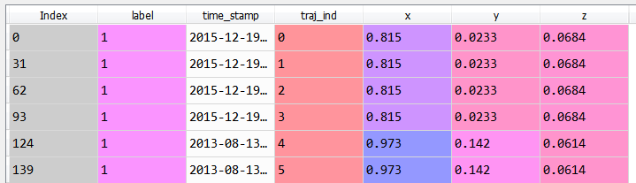

About You


Schedule
13.2
| אירוע | שעה |
|---|---|
| התכנסות וארוחת בוקר | 08:00 |
| דברי פתיחה והוראות | 09:00 |
| התחלה | 10:15 |
| ארוחת צהריים | 13:00 |
| הרצאה על Deep Learning | 16:00 |
| ארוחת ערב | 18:00 |
| סוף היום הראשון | 22:00 |
14.2
| אירוע | שעה |
|---|---|
| ארוחת בוקר וחזרה לעבודה | 08:00 |
| סוף התחרות וארוחת צהריים | 12:00 |
| הצגת התוצרים | 13:00 |
| הכרזה על הזוכים | 15:00 |
| סוף האירוע | 16:00 |
Intro
Plana, מדינה בגלקסיית אופק הרחוקה, היא מדינה מתפתחת הסובלת מאיי מורדים הקיימים בתוכה ויורים עליה רקטות באופן תדיר.
ברחבי Plana פזורים מכ"מים רבים הקולטים את מסלולי הרקטות הנורות עליה.
Mission
עליכם לבנות מודל שבהינתן מסלול של רקטה, יחזה מה סוג הרקטה, על מנת להעריך כמה שיותר מוקדם את מידת הסיכון הנשקפת מפגיעת טיל, ולבצע היערכות מתאימה
Description
נתון לכם קובץ בשם "train.csv" בו נמצא מידע על מסלולים שונים שנקלטו במכ"מים הפזורים ב Plana במהלך ה4 שנים האחרונות.
כל רשומה בקובץ מכילה קליטה של נקודה במעופה של רקטה:
| שם המשתנה | סוג | פירוט |
|---|---|---|
| index | מספר | קוד רשומה |
| Label | string | משתנה המטרה: מציין את סוג הרקטה |
| time_stamp | datetime | מייצג את הזמן בו נקלטה הנקודה |
| traj_ind | מספר | קוד מסלול |
| קורדינטות | (x,y,z) | מייצגות את הקורדינטות של הנקודה הנקלטת |
כך אם במסלול של רקטה יש 50 נקודות, מצופה שיהיה בקובץ המידע הנ"ל 50 רשומות המתאימות ל -traj_ind של המסלול הנ"ל.
Submission
נתון לכם קובץ sample_submission.csv המכיל דוגמה להגשה (בה כל המסלולים מקבלים תיוג 0 עבור סוג הרקטה).
מצופה מכם לשלוח קובץ עם 2 עמודות:
| שם המשתנה | פירוט |
|---|---|
| trajectory_ind | מכילה את המזהים של המסלולים בקובץ המבחן |
| label | סוג הרקטה שחזיתם עבור המסלול |
עקבו אחרי הפורמט של sample_submission.csv כדי להבין מה בדיוק עליכם לשלוח.
The Staff
Domain Knowledge
Plana עברה אסונות טבע רבים במרוצת השנים שהשאירו את פני השטח שלה "שטוחים", כלומר אין בה הרים וודיות. ניתן להניח שרקטות עוברות מסלול בליסטי רגיל המאפיין גוף נקודתי חסר חיכוך ושחוקי הפיזיקה המוכרים לנו מתקיימים גם בPlana.
משיחה עם גורמים מודיעינים עלו התובנות הבאות:
יש סברה כי רקטות שונות משוגרות ממשגרים שונים. לכל משגר נפח הטענה שונה של רקטות (כלומר כמות מקסימלית של רקטות שיכולות להיות משוגרות ממנו).
רקטות נורות לרוב במטחים (יחד או בשהייה קצרה)
Plana מכירה שיש קבוצות לא רבות של מורדים המרוכזים באזורים גיאוגרפיים מסויימים במדינה (שעליהם איננה יודעת להצביע במדויק) ולהם יש תו"ל שונה זו מזו (אינם מאוגדים תחת ארגון על וכל אחד מהם רוכש את אספקת הרקטות שלו באופן עצמאי)
Evaluation
קיבלנו קובץ מבחן test.csv שעליו המודל שלכם ייבחן. הקובץ מכיל את אותו המידע בדיוק כמו ב- train.csv רק ללא השדה label, שאותו עליכם לחזות (וכמובן על מסלולים שונים מאשר ב-train. אחרת לא היינו מתכנסים כאן היום).
הגורם המבצעי בPlana מעוניין במערכת שיודעת לעבוד טוב עבור כל סוגי הטילים. הוא איננו מוכן לסבול מצב בו יהיה טיל שעבורו המערכת תעבוד בצורה לא טובה. אי לכך, לאחר דיונים ממושכים עימם הוסכם מדד ההערכה הבא: